Eine native Desktop-Anwendung (PySide6 / Qt 6) für Stundenzettel aus Jira-Worklogs - der einfach zu bedienende Desktop-Port der Textual-Anwendung jira-timesheet. Mit Liste, Kalender und Jahr, Excel- und PDF-Export, Feiertagskalender und Jahres-Prognose.
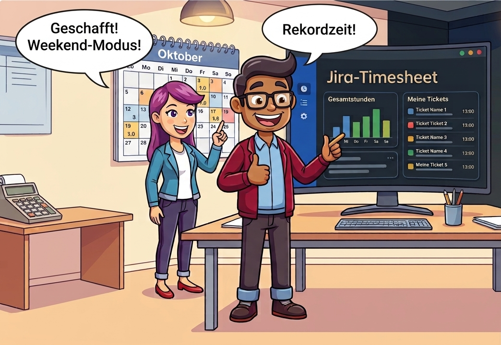
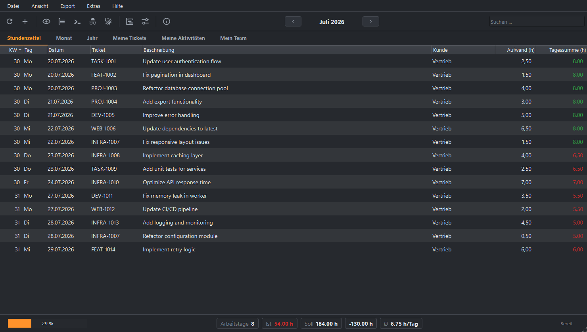
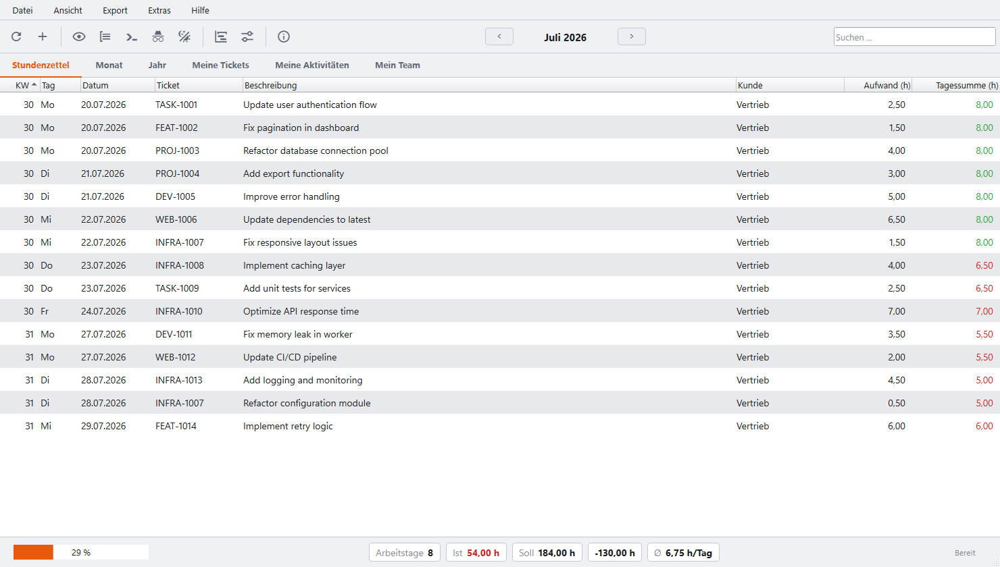
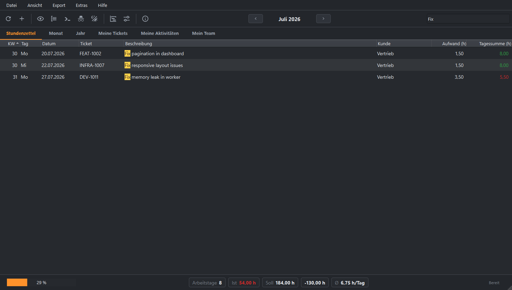
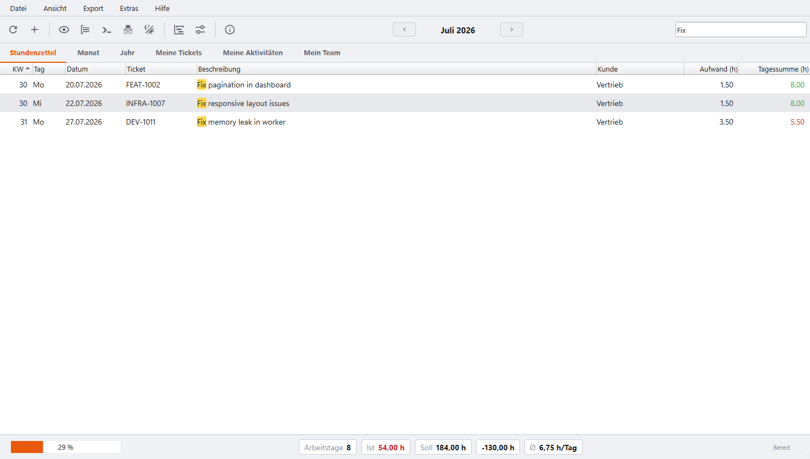
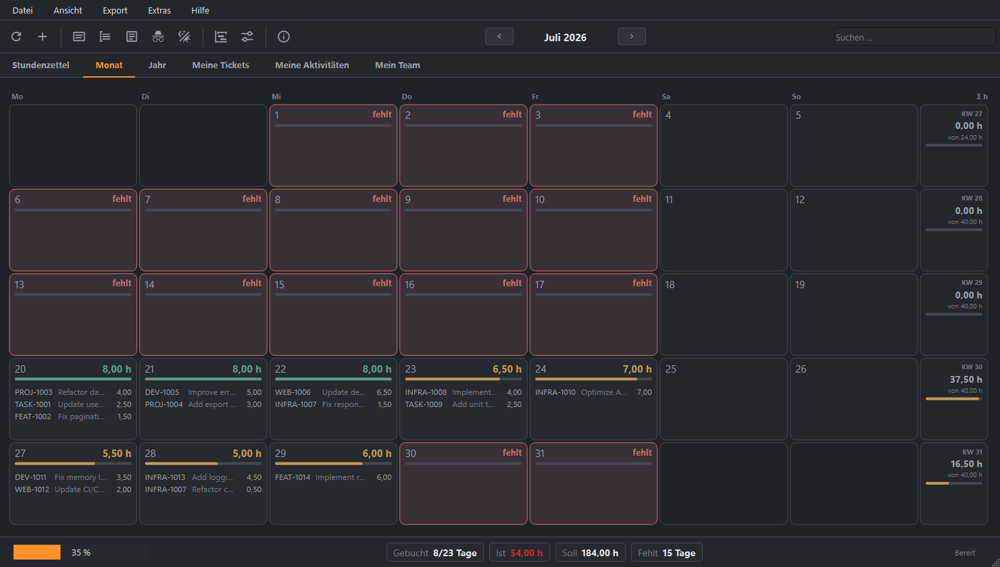
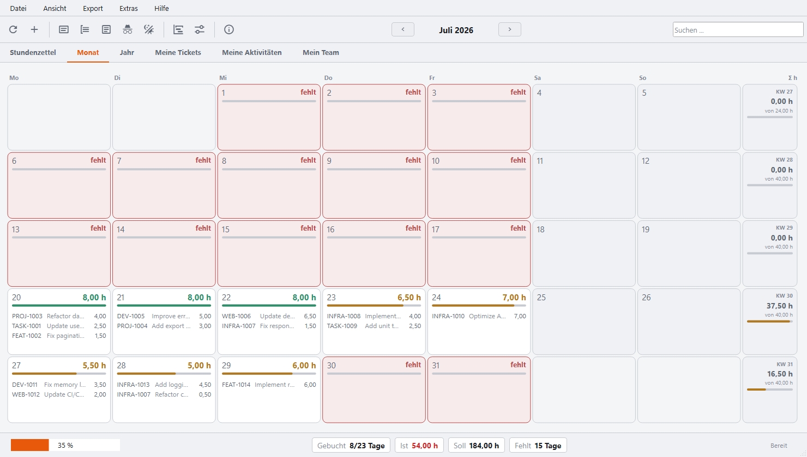
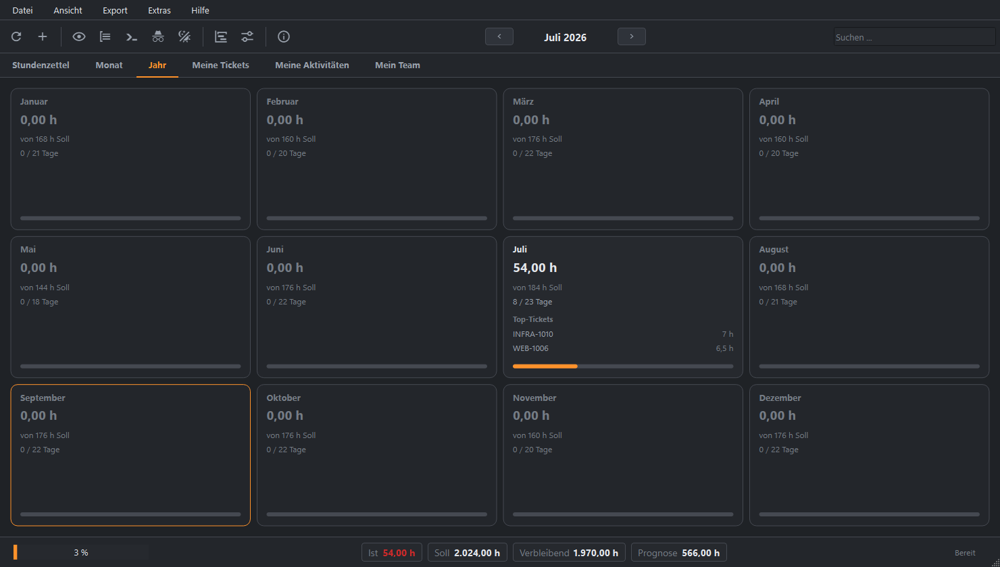
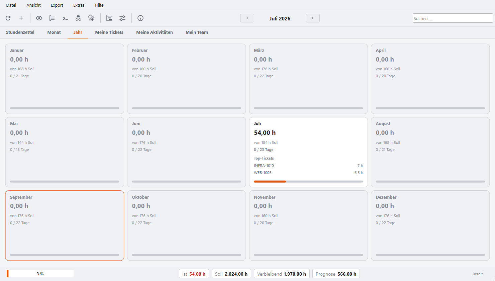
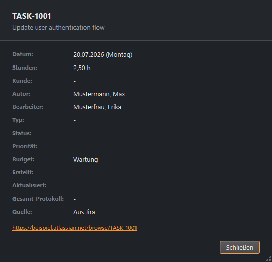
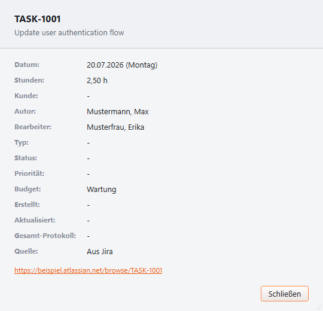
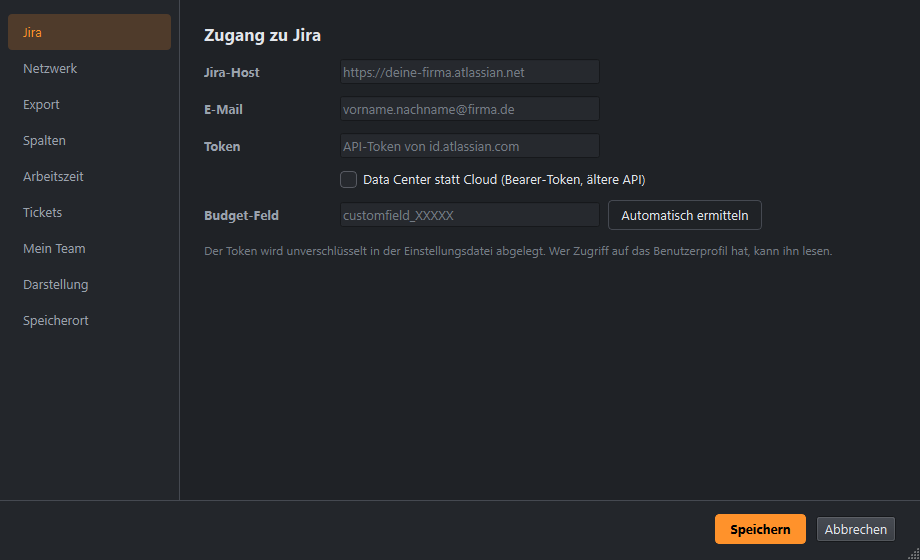
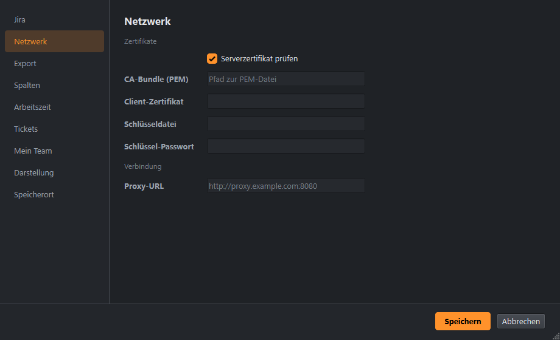
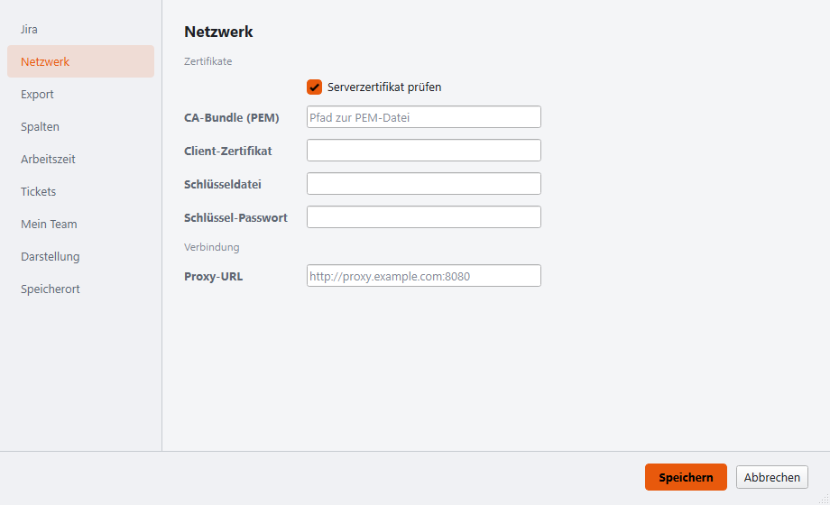
Diese Desktop-GUI und die Textual-TUI bauen auf demselben Code auf - dieselbe Jira-Anbindung, Stundenzettel-Logik, manuelle Erfassung und der Excel-/PDF-Export. Gleiche Ergebnisse, gleiche Funktionen. Beide laufen unter Windows, macOS und Linux. Der Unterschied ist nur, wie Du damit arbeitest. Nimm die, die zu Deiner Umgebung oder Deinen Vorlieben passt - oder beide.
Läuft in jedem Terminal, auch über SSH, und braucht keinen Window-Manager - die natürliche Wahl auf einem entfernten Rechner oder einem Linux-Server ohne Oberfläche. Tastaturzentriert, leichtgewichtig, mit Retro-Themes. Sie kann alles, was diese GUI kann. Zur TUI.
Native Fenster, Menüs und Dialoge, durchgehend mit der Maus bedienbar, Spalten per Maus ziehbar, betriebssystemeigene Datei- und Druckdialoge. Die komfortable Wahl, wenn Du am Desktop sitzt und ein Fenster-Programm bevorzugst.
Stundenzettel aus Jira - automatisch geholt, um eigene Zeiten ergänzt, visuell aufbereitet, exportbereit.
Worklogs per REST-API - standardmäßig Jira Cloud (v3, Basic-Auth mit API-Token), per Schalter auch altes Server/Data Center (v2, Bearer-Token).
Bei Jira Cloud findet ein Klick das Budget-Custom-Field automatisch - kein manuelles Nachschlagen der Field-ID nötig.
Filtert beim Tippen nach Ticket-ID oder Beschreibung; die Treffer werden in der Liste hervorgehoben.
Liste mit KW und Wochentag, Kalender als Monatsgrid, Jahresansicht mit Prognose. Umschalten per Reiter oder Klick.
Formatierter Stundenzettel mit Logo und Unterschriftszeile. PDF ist Adobe-signierbar. Druckvorschau direkt aus der App.
Deutsche Feiertage pro Bundesland. Lücken-Erkennung für fehlende Arbeitstage.
Arbeitszeitvergleich mit Differenz. Jahres-Prognose mit Urlaubstagen und Netto-/Brutto-Umsatzprognose.
Nicht jede Stunde landet als Worklog in Jira. Mit Strg+N lassen sich Zeiten erfassen - Aufwand wahlweise als 3h 30m, 3:30 oder 3,5. Sie liegen in einer eigenen SQLite-Datei, zählen überall mit und sind farblich markiert.
Jede Spalte lässt sich getrennt für Anzeige und Export schalten und im Export frei benennen. In der Liste ziehst Du die Breiten mit der Maus; die Beschreibung füllt den Rest.
Ersetzt Tickets, Beschreibungen, Autoren und den Jira-Host durch Dummy-Werte - für sichere Screenshots. Die echten Daten bleiben unangetastet.
Skaliere die ganze Oberfläche mit Strg +/- oder Strg + Mausrad. Helles und dunkles Erscheinungsbild mit einstellbarer Akzentfarbe.
Abgeschlossene Monate werden gecacht - die Jahresansicht lädt sofort. Jedes Speichern der Einstellungen legt eine rollierende Sicherung an.
| Taste | Aktion |
|---|---|
F5 | Buchungen des Monats holen (bzw. das Jahr in der Jahresansicht) |
Strg+F | Suchfeld fokussieren |
Strg+N | Manuelle Zeit erfassen |
Strg+D | Ticket-Details anzeigen |
Strg+E | Excel-Export |
Strg+Umschalt+E | PDF-Export |
Strg+P | Druckvorschau |
Strg+L | Meldungsfenster ein-/ausblenden |
Strg +/- / 0 | Zoom rein / raus / zurücksetzen (auch Strg + Mausrad) |
Strg+, | Einstellungen |
F1 | Info |
Strg+Q | Beenden |
irm https://raw.githubusercontent.com/michaelblaess/jira-timesheet-qt/main/install.ps1 | iex
curl -fsSL https://raw.githubusercontent.com/michaelblaess/jira-timesheet-qt/main/install.sh | bash
Oder das Archiv unter Releases herunterladen. Läuft unter Windows, macOS und Linux · jira-timesheet-qt --demo startet ohne Jira-Zugang mit Beispieldaten.
Beim ersten Start erscheint ein Hinweis, der bestätigt werden muss - ohne Zustimmung beendet sich das Programm. Das Werkzeug liest über die Jira-REST-API Arbeitszeit-Buchungen aus einem fremden System; je nach Rechtevergabe gehören dazu auch Buchungen anderer Personen. Mit der Bestätigung erklärst Du, das Programm nur gegen dazu berechtigte Jira-Instanzen einzusetzen und nur Daten auszuwerten, zu deren Verarbeitung Du befugt bist. Die Zustimmung wird in ~/.jira-timesheet-qt/disclaimer.json festgehalten.
Die Software wird kostenlos und ohne jede Gewährleistung bereitgestellt ("as is"), wie in Abschnitt 7 der Apache License 2.0 geregelt. Die Haftung des Autors (Michael Blaess) für Schäden aus der Nutzung ist im gesetzlich zulässigen Rahmen ausgeschlossen. Die Haftung für Vorsatz und grobe Fahrlässigkeit, für die Verletzung von Leben, Körper oder Gesundheit sowie nach zwingendem Produkthaftungsrecht bleibt unberührt.
Haftungshinweis: Dieses Projekt ist nicht von Atlassian entwickelt, unterstützt oder autorisiert. "Jira" und "Atlassian" sind eingetragene Markenzeichen von Atlassian Corporation. Dieses Werkzeug nutzt die öffentliche Jira REST API und steht in keiner Verbindung zu Atlassian.